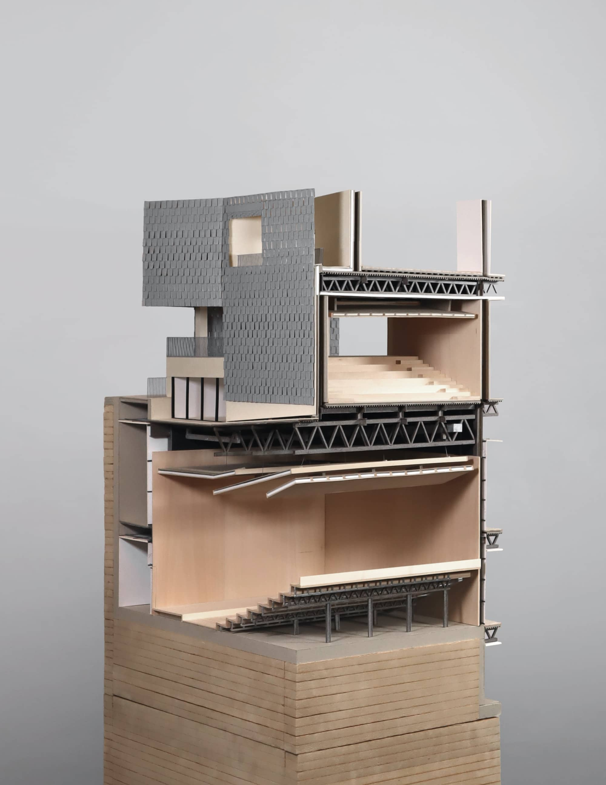

Fig. 1.2.2.a: Exterior Render
Figs. 1.2.2.b.1-2: Street Theatre Operability
Fig. 1.2.2.d: Street Theatre Interior
Fig. 1.2.2.e: Interior Circulation
Fig. 1.2.2.f: Rehearsal Space and Balcony
Fig. 1.2.2.g: Event Space and Balcony
Fig. 1.2.2.h: Second Floor Plan
Fig. 1.2.2.i.1: Tectonic Chunk Model
Figs. 1.2.2.i.2-4: Tectonic Chunk Model Details
Fig. 1.2.2.j: Wall Section
Work completed collaboratively with Todd Anderson under Elizabeth Bishop for Studio ARCH 203 at UC Berkeley.